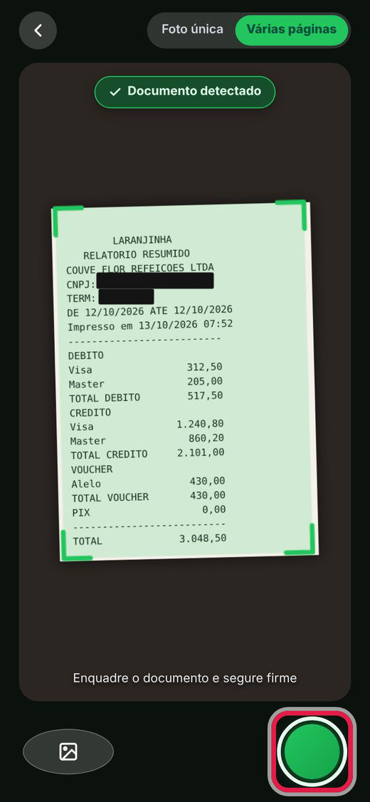
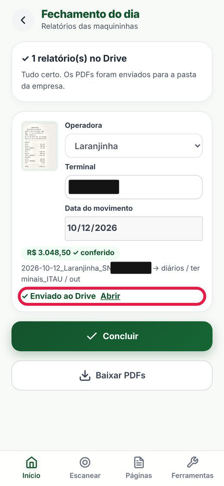
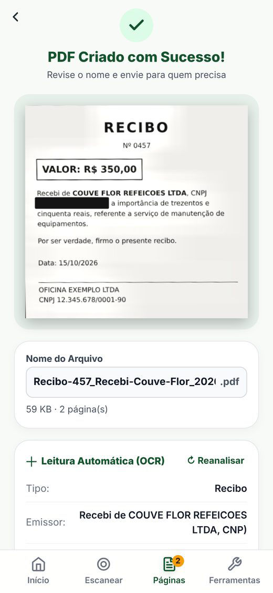
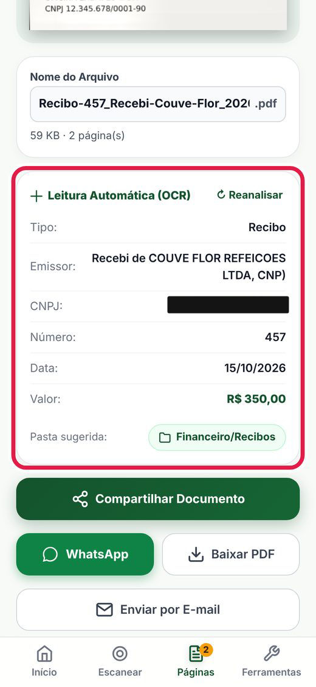
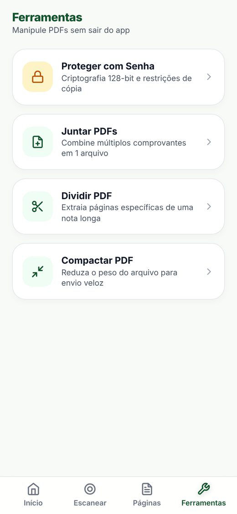
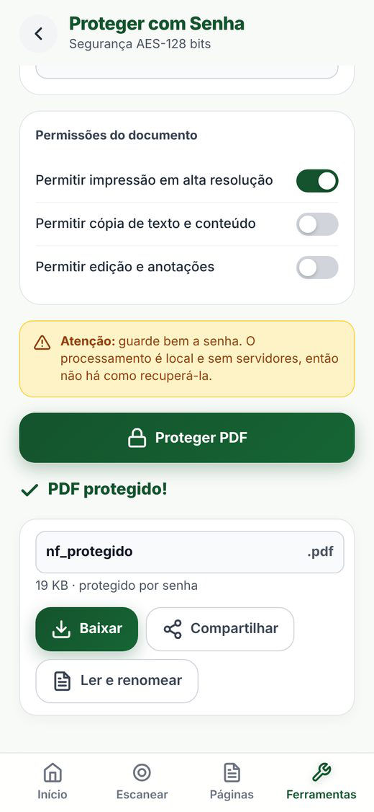

PORTA 04 · SCANNER / PDF TOOLS
Papel na mesa, PDF certo no lugar. Passe o scanner.
Um app no celular que fotografa, lê e organiza os documentos da Couve Flor, e manda o fechamento das maquininhas para o Drive. Mova o cursor (ou o dedo) sobre a mesa.
O APP DE VERDADE
Seis telas, um fluxo.
Prints do guia do operador, feitos com documentos de teste. Dados sensíveis tarjados.

1 Fotografa e detecta o documento 
2 Fechamento do dia vai para o Drive 
3 PDF criado, com nome sugerido 
4 Leitura automática (OCR) 
5 Ferramentas de PDF 
6 Proteger com senha
FICHA TÉCNICA
Scanner Couve Flor
- Problema
- Todo dia, os relatórios das maquininhas e os documentos do restaurante (notas, recibos, contratos) viravam fotos tortas, arquivos sem nome e trabalho manual para chegar ao Drive.
- Solução
- Um app instalável no celular: fotografa, corrige a perspectiva, lê o texto em português, sugere nome e pasta e gera o PDF. O fechamento das maquininhas é reconhecido e enviado ao Google Drive; o operador só confere o "✓ Enviado ao Drive".
- Privacidade
- Tudo é processado no próprio aparelho. Só o relatório da maquininha vai para o Drive da empresa, e só quando está configurado. Os outros documentos nunca saem sozinhos.
- Funciona offline
- PWA instalável, abre em tela cheia; bibliotecas e idioma do OCR ficam no aparelho.
- Stack
- HTML · CSS · JavaScript puros · getUserMedia · Tesseract.js (OCR) · pdf-lib · pdf.js · Service Worker · Google Drive
- Código
- Privado (repositório scanner-couveflor): aqui só a descrição e as telas.